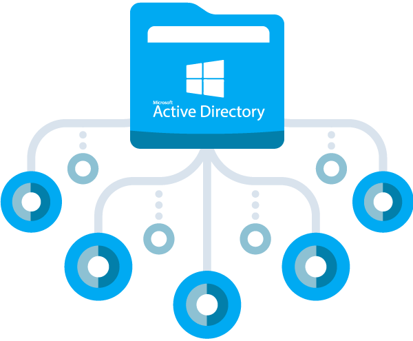

O que é Grupo de Usuários no Active Directory?
Dentro da concepção de um Serviço de diretório, um grupo é um conjunto de usuários, contatos e computadores que podem ser gerenciados como uma única unidade. Os grupos são gerenciados como objetos de diretório, e normalmente são atribuídos a elementos que compartilham propriedades semelhantes em relação a atributos como permissões de acesso. Por exemplo: em uma determinada empresa, analistas financeiros de um departamento financeiro possuem as mesmas permissões a serviços/sistemas utilizados por este setor. Um grupo também pode ser formado por dois ou mais grupos.
Como Criar e Gerenciar Grupos de Usuários no Active Directory:
No vídeo a seguir, publicado no YouTube pelo Marco André, você pode entender como criar UO´s e gerenciá-las, utilizando Active Directory no Windows Server 2016.